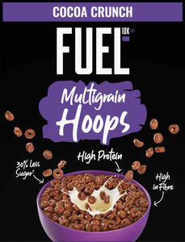
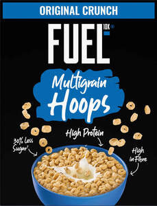

Trade Mark Journal No.2026/005 30 January 2026
UK00004324867 15 January 2026 (30)
Mark 1

Mark 2

- Class 30
- Coffee, tea, cocoa and substitutes therefor; rice, pasta and noodles; tapioca and sago; flour and preparations made from cereals; bread, pastries and confectionery; chocolate; ice cream, sorbets and other edible ices; sugar, honey, treacle; yeast, baking-powder; salt, seasonings, spices, preserved herbs; vinegar, sauces and other condiments; ice [frozen water]; cereal-based meal replacement bars; cereal based prepared snack foods; cereal-based savoury snacks; cereal-based snack food; chocolate-based bars; chocolate-based meal replacement bars; chocolate-based ready-to-eat food bars; chocolate-coated rice cakes; flour based snack foods; flour based savory snacks; flapjacks [griddle cakes]; flapjacks; oat clusters containing dried fruit; snack food products made from cereals; snack food products made from cereal flour; snack food products consisting of cereal products; snack foods consisting principally of grain; snack products made of cereals; almond confectionery; bakery goods; cereal bars and energy bars; chocolate; chocolate based products; chocolate-based spreads; chocolate coated fruits; chocolate coated nougat bars; chocolate coated nuts; chocolate-coated sugar confectionery; chocolate desserts; chocolate flavoured confectionery; chocolate flavourings; cocoa-based ingredients for confectionery products; dessert puddings; foods with a cocoa base; ice beverages with a chocolate base; imitation chocolate; imitation custard; instant dessert puddings; muesli desserts; pancakes; porridge; instant porridge; porridge oats; oat porridge; rice porridge; breakfast cereals, porridge and grits; oat bars; cookies; almond cookies; filled cookies; processed oats; rolled oats; crushed oats; foodstuffs made from oats; oats for human consumption; prepared oats for human consumption; processed oats for food for human consumption; pancake mixes; savory pancakes; frozen pancakes; instant pancake mixes; savory pancake mixes; batter for making pancakes; muffins; muffin mixes; baking powders; prepared baking mixes; ready-made baking mixtures; pre-mixes ready for baking; rice; rice biscuits; prepared rice; rice snacks; rice cakes; rice pudding; rice cake snacks; cornflakes; cereals; cereal snacks; cereal preparations; cereal bars; breakfast cereals; cereal breakfast foods; cereal-based bars; hot breakfast cereals; high-protein cereal bars; foods produced from baked cereals; ready-to-eat cereal-derived food bars; snack bars containing a mixture of grains, nuts and dried fruit [confectionery]; cereal preparations coated with sugar and honey; biscuits; biscuit mixes; filled biscuits; biscuits for human consumption made from cereals; biscuits for human consumption made from malt; pastries, cakes, tarts and biscuits (cookies); oat biscuits for human consumption; brownies; brownie mixes; brownie dough; frozen brownie dough; muesli; muesli bars; snacks made from muesli; muesli consisting predominantly of cereals; coffee; coffee beverages; coffee drinks; coffee mixtures; ground coffee; decaffeinated coffee; instant coffee; malt coffee; chocolate coffee; coffee flavourings; coffee substitutes; mixtures of coffee; coffee based beverages; prepared coffee and coffee-based beverages; coffee beverages with milk; extracts of coffee for use as flavours in foodstuffs; extracts of coffee for use as flavours in beverages; cake bars; cereal based food bars; cereal-based snack bars; cereal based energy bars.
Premier Foods Group Limited
Representative: HGF Limited